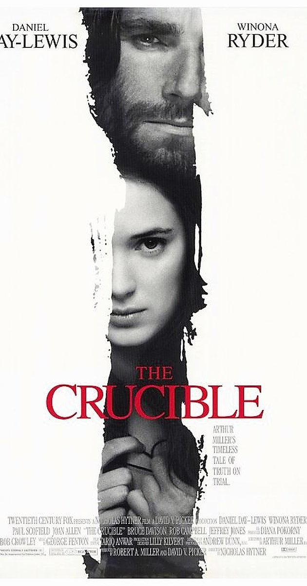

The Exorcist (1973)
Sometimes medicine and science cannot explain the terrifying phenomenon that occur. When Regan MacNeil displays terrifying symptoms -- levitating, speaking in tongues, vomiting, -- doctors can't do anything to cure it. However, the local church believes possession to be the cause behind the strange behavior of Regan. This called for an exorcism.

The Devils (1971)
In 17th century France, Father Urbain Grandier attempts to shield his city of Loudun from Cardinal Richelieu and his corrupt church practices that represent greed and power. In a twist of events, Grandier is accused of witchcraft by a sexually repressed nun, causing riots and chaos to break out. Grandier, once a loved public figure in Loudun, meets his eventual demise through burning at the stake.
The Blair Witch Project (1999)
In an unsettling found footage style of film, The Blair Witch Project recounts the experience of three film students who shoot a documentary on a local murderer in a small town, the Blair Witch. Building evidence to substantiate their claims, the Blair Witch project takes a turn for the worse when the students get lost in the nearby forest and begin to hear terrifying sounds.
Manshin: Ten Thousand Spirits (2014)
Ostracized by Korean society for being possessed by spirits as an adolescent, a life documentary of Kim Keum-wha is recounted in which she embraces shamanism and endures the suffering of people. Despite Korea's turbulent history and the controversy of shamanism, this film captures the process in which Kim is recognized as a national treasure of Korea.
The Wolf Man (1941)
A tragic tale in which Larry Talbot fends off a werewolf attack, bitten in the process, and transforms into the same wolf-life creature who terrorizes the small town of Llanwelly, Wales. Struggling to come to terms with this new permanent condition, Larry is eventually bludgeoned to death by his father after attacking his love interest, Gwen Conliffe. This tragic tale comes to an end as Larry reverts to his human form with both Sir John Talbot and Gwen watching in horror.

The Crucible (1996)
Loosely inspired by the Salem witchcraft trials, The Crucible recounts the fictional account of the town minister, Reverend Parris, discovering his daughter Betty, niece Abigail, and other girls conjuring spirits in the forest with his slave Tituba in 1692.
Focusing on the inconsistecies of the Salem witch trials and the extreme behavior that results from ulterior motives and dark desires, this film and its associated play acts as an allegory to the McCarthy hearings of the 1950s, in which the threat of communism is paralleled to the threat of witchcraft.